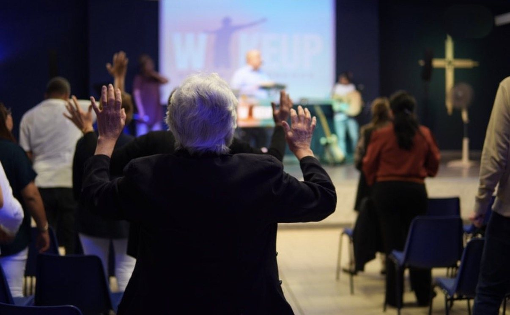
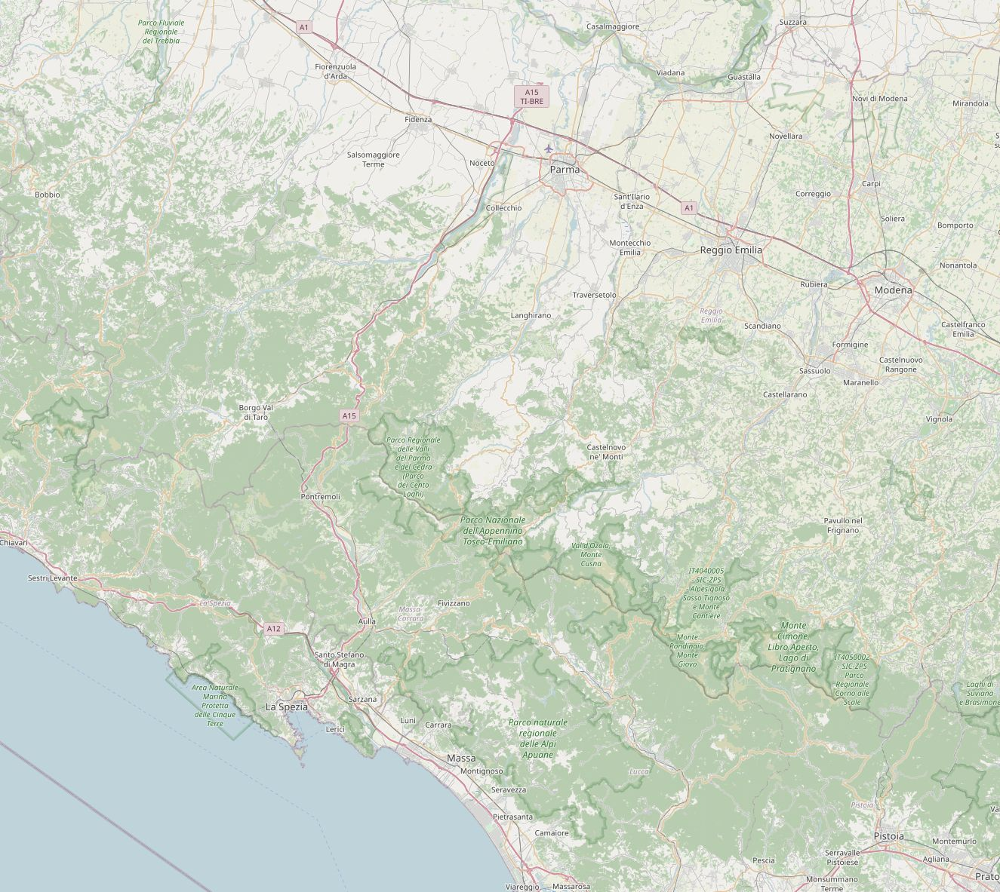

«Crediamo che questo mondo pieno di problemi e sofferenze abbia bisogno di una speranza vera.»
Galleria
Prossimi eventi
Gli appuntamenti di tutte le nostre chiese, in un posto solo.
Le comunità
Tocca una scheda e si apre la pagina di quella chiesa: orari, pastori e come arrivare.
Trova la tua comunità
Premi il bottone: il telefono ti dice quale chiesa del gruppo hai più vicino, e a quanti chilometri.
La tua posizione resta sul tuo telefono: non la riceve e non la salva nessuno.

Mappa © contributori di OpenStreetMap
Chi siamo
I pastori
I pastori di ognuna delle nostre chiese. Se vieni per la prima volta, sono loro ad accoglierti.
Predicazioni
Gli incontri e i messaggi del Gruppo Cristiano, in audio su Spotify: da ascoltare quando vuoi, anche in macchina o mentre cammini.
La visione
Punti di fede
Domande
Chi non è mai stato in una chiesa evangelica non chiede di teologia: chiede come ci si veste e quanto dura. Le domande qui sotto sono quelle vere.
Donazioni
Se vuoi contribuire alla missione del gruppo, puoi farlo così. Ogni offerta è libera e volontaria.